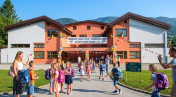

Dobrodošli na moji šoli!
Na tej spletni strani lahko spoznaš Osnovno šolo Radlje ob Dravi in izveš nekaj zanimivosti o njej.

📚 Opis naše šole
Osnovna šola Radlje ob Dravi spada med srednje velike osnovne šole v Republiki Sloveniji. Skupaj s podružnicami in vrtcem jo obiskuje več kot 700 otrok iz občine Radlje ob Dravi in okoliških občin. Skupno šola zaposluje več kot 100 oseb.
💻 Šolski prostori in oprema
Osnovna šola Radlje ob Dravi je bila nazadnje dograjena in obnovljena leta 2005. Leta 2010 so tik ob šoli zgradili še novo športno dvorano.
Šola je dobro opremljena s sodobnimi učnimi pripomočki. V 95 % učilnic je montiran digitalni projektor, v polovici teh pa je tudi interaktivna tabla.
Vsi učitelji in vzgojiteljice imajo za uspešno delo na voljo prenosne računalnike. Šola je že več let povezana z internetom prek hitre optične povezave 100/100 in ima na vseh enotah brezžično omrežje.
🎬 Oglej si video o šoli
Oglej si video in izvedi še kaj zanimivega.
🌐 Obišči uradno spletno stran
Za več informacij o šoli obišči njeno uradno spletno stran.
Obišči spletno stran šole →